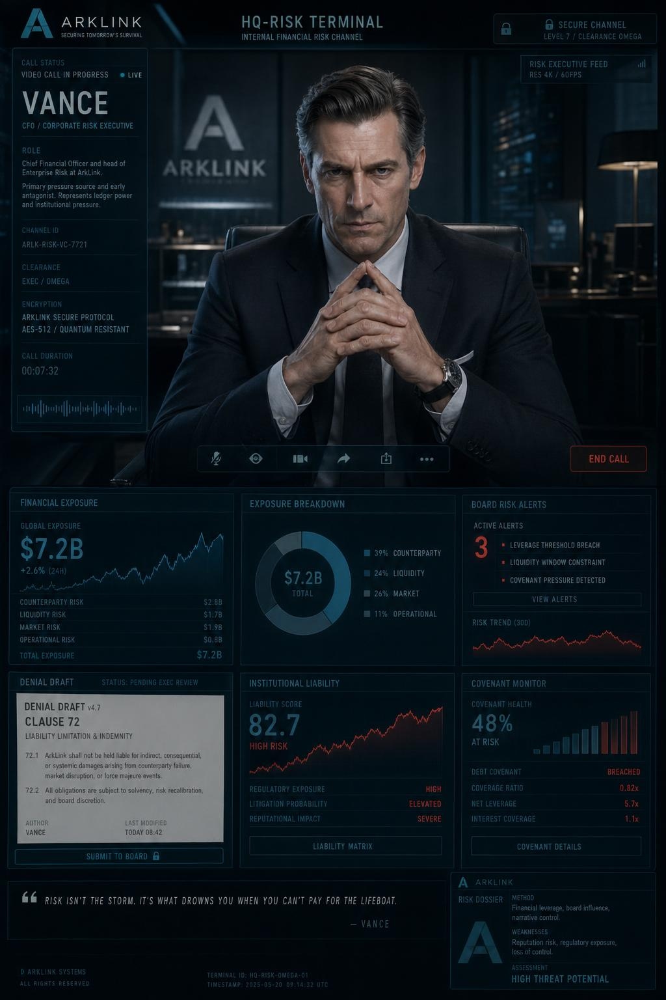

在紧急理赔文件中决定临赔、拒赔、封存证据，每一次操作都会改变路线。
ARKLINK CLAIM DENIAL PROTOCOL
T-402 / 90 SEC
近未来气候悬疑互动小说
ArkLink
灾难理赔精算终端
你不是救援队。你决定理赔、证据、医疗权限，以及谁先被系统放弃。
90 秒后默认拒赔证据或公司信任每个选择都会有人付账
一款关于“什么会被计算”的视觉小说
系统会记录你保住了什么、牺牲了什么，以及谁开始盯上你。
进度保存在本机，不需要账号即可游玩。
从第一笔高压核赔开始
首轮体验聚焦 ArkLink 权限校准、T-402 理赔包、Jack 的治疗权限，以及每个决定背后的私有风险频道。
